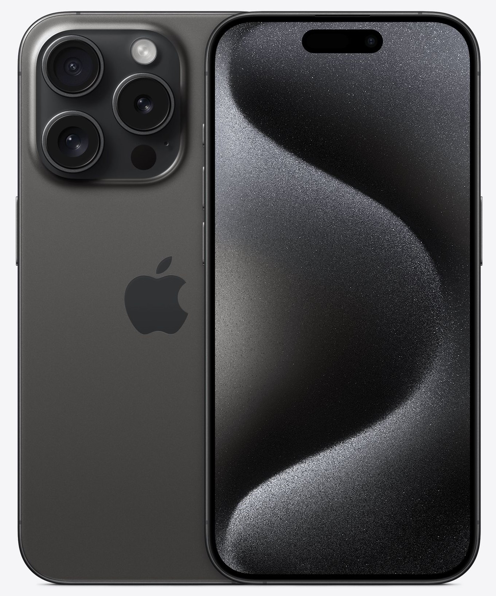

IPHONE 15 PRO

Precio: $1.049.990
Color: Gris
Marca: Apple
Descripción: El iPhone 15 Pro llega este año con un chasis fabricado en titanio que reemplaza al acero inoxidable y estrena puerto USB-C que reemplaza al puerto Lightning. El iPhone 15 Pro tiene una pantalla OLED LTPO de 6.1 pulgadas y una cámara triple en su posterior, con un sensor principal de 48MP, y un par de sensores de 12MP que funcionan como telefoto y ultrawide. La cámara frontal es de 12MP e incopora OIS y sensores para Face ID. La batería del iPhone 15 Pro se puede cargar al 50% en 30 minutos, es resistente al polvo y agua, tiene parlantes stereo y está impulsado por el nuevo procesador Apple A17 Pro de seis núcleos.